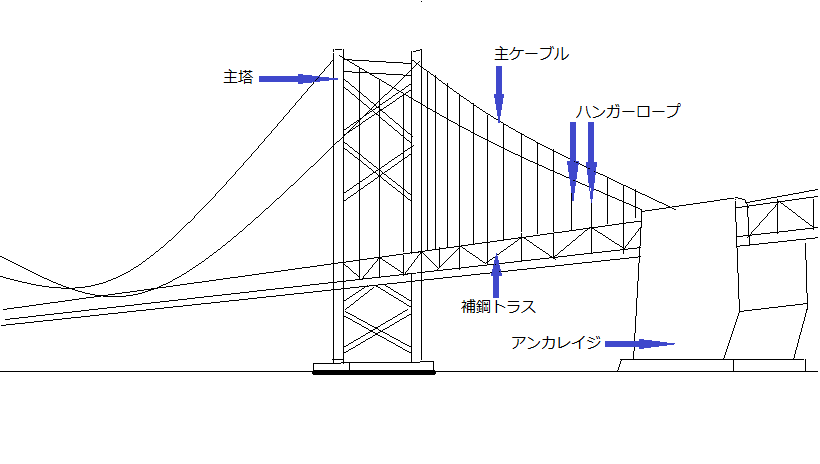

瀬戸大橋の構築・維持について
提供(公社)香川県観光協会
はじめに
私は今年の春に初めて瀬戸大橋を渡り、
これほど大きな橋があるのかと感動を覚えた。
それと同時にこのような大きな橋はどのように造られたのか疑問に思った。
その後何回か通ったが、毎回工事が行われていたため、維持も大変なのだろうと思った。
そこで今回、瀬戸大橋の構築・維持について調べた。
構築
JB本四高速のホームページ内容を要約する。
1.地盤
海中に爆薬を装填し水中爆破した後、岩盤を露出させ地盤を平らにする。
2.土台
平らになったところに
巨大鋼製型枠であるケーソンを製作・設置し、
ケーソン内にモルタルを注入して主塔の土台が完成する。
3.主塔
その基礎の上に工場で製作・仮組立された塔柱が大型クレーンにより架設される。
4.橋桁
塔と塔の間に空中の足場となるキャットウォークを設け、
ケーブル、ケーブルと橋桁をつなぐハンガーロープを架設する。
そして両側の塔から橋桁を架設する。
5.仕上げ
路面やレール、交通管理設備などが設置され完成する。

☆構築に伴う開発
維持
海浜部の構造物の保全では、内部鋼材の腐食等による劣化に対して、
点検や修復が行われる。
維持管理に用いられる機材については、
人力で行うものと機械で行うものとの大まかに2種類存在した。
1.人力
- 磁石車輪ゴンドラ
- 強力な磁石が車輪に内蔵されており、
鋼壁面であればどのようなところでも作業が可能である。
主に主塔のほぼ全ての点検及び塗装に使われる。
- 真空車輪ゴンドラ
- コンクリート壁面に真空で吸着しながら昇降する。
主に土台であるアンカレイジや高架橋脚での作業に使われる。
⇒風による揺れや作業反力の確保などによる稼働率の低下を軽減
2.機械
- 主塔点検補修用ロボット
- カメラ装置と遠隔の作業機具が搭載され、
車輪に内蔵された磁石で自ら吸着しながら移動する。
高所でも簡易に点検-補修が可能である。
⇒安全かつ容易
おわりに
瀬戸大橋の構築は、海底に爆薬を装填するところから始まり、すべての工程が大規模なものであった。
また、維持管理については作業装置の機械化により、効率的かつ柔軟な対応がなされていた。したがって、私は技術の開発や機械化はさらに力を入れていくべきだと考える。
参考文献
JB本四高速 まるごと体感「瀬戸大橋」見て・きいて新鮮な感動を
https://www.jb-honshi.co.jp/seto-ohashi
鹿島建設 橋の歴史物語
https://www.kajima.co.jp/gallery/const_museum/hashi/history/06/main6.html#003